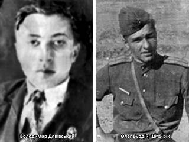

Прогриміло страшне 22 червня 1941 року… Уже
з перших днів війни на фронт було мобілізовано більше 500 жителів
Катюжанки. Людям ще не вірилось, що це кровопролиття продовжиться довго і
багато хто з односельчан не повернеться вже до рідної домівки.
Сумнів розвіявся, коли 23 серпня 1941
року в село вдерлись фашисти. Німецькі окупаційні власті відразу ж
взялися за створення нових органів влади: призначався староста села,
почали роздавати колгоспні землі всім бажаючим для обробітку, щоб потім
скористатися плодами рабської праці жителів села. Не давали землі лише
тим, чиї рідні перебували на фронтах війни. Допомагали «господарювати»
на землі місцеві та заїжджі поліцаї, що пішли на службу або за
переконанням, або для того, щоб вижити, або ж з примусу. Та не багато
було запроданців.
Не злічити всіх подвигів, які здійснили
жителі села на фронтах війни, у підпіллі та в партизанських загонах. Це
були справді героїчні подвиги, що навіки вписані в сторінки нашої
історії.
Насамперед, це подвиг Володимира
Дяківського, племінника Сергія Володимировича Дяківського – директора
школи. У них з Ганною Іванівною своїх дітей не було, тому вони
запропонували Володі жити з ними – і до школи ближче, і достатки кращі.
До війни юнак навчався в Катюжанській школі, яку закінчив у 1941 році.
Був дуже допитливим, здібним хлопцем, любив фотографувати, займався
радіосправою, добре вчився і мріяв, як і його дядько, стати
вчителем.
Страшна звістка про початок війни
приголомшила Володимира. Він прийшов до Сергія Володимировича
порадитися, як бути далі. Дядько знав, що в навколишніх лісах
створюється партизанський загін для боротьби в тилу ворога. Послухавши
поради Сергія Володимировича та пориву власного серця, Володя пішов у
партизанський загін. З перших днів перебування в загоні він рвався в бій
з ненависним ворогом, але йому була доручена розвідка – не менш
небезпечна і важлива справа.
Зібрав дані про Вахівку, Рихту,
Богдани. Скільки поліцаїв, гітлерівців, де стоять вогневі точки – все це
доповідав командирові загону.
Одного разу, повертаючись із Вахівки,
почув збуджені голоси на крайній вулиці. Тихо підійшовши, побачив, як
два поліцаї тягнули з хати майно. Господиня, яку грабували німецькі
наймити, просила їх залишити хоч що-небудь з теплого одягу, бо
наближалася зима. Але поліцаї грубо відштовхнули жінку і стали виходити з
двору. Володимир ледве стримався, щоб не вистрелити, але вчасно
отямився. Розправився б з поліцаями і втік, а що буде тій жінці, коли
знайдуть у неї у дворі забитих поліцаїв. Дочекався, поки обидва
запроданці покинули подвір’я. Ідуть вулицею і задоволено сміються.
Володимир городами перебіг напереріз. Як тільки поліцаї підійшли до
греблі, він вихопився перед ними і декілька разів вистрілив.
У загін Володимир повертався у веселому
настрої та ще й з трофейною зброєю. Правда, за цей випадок таки добре
влетіло юнакові від командира загону, бо розвідникові суворо
заборонялося встрявати в сутички з ворогом.
Двічі ходив у розвідку і в Катюжанку.
Третій раз виявився останнім. Щеміло серце в юнака, бо в селі, яке
кишіло німцями та поліцаями, жила його кохана дівчина Галя. То ж завжди
вибирав мить, щоб хоч здалеку побачити рідну постать.
Ішов з лісу і лише проминув «Бабу», як
раптом його помітив поліцай, із місцевих. Але він не зачепив розвідника,
а прослідкував за ним аж до того часу, доки він не зайшов у село.
Батьки Володі проживали неподалік біля центральної вулиці села, то ж він
вирішив по дорозі провідати їх. Тільки-но привітався з батьком та
матір’ю, як з гуркотом розчинилися двері і в хату ввірвалися три
гітлерівці й поліцай. Скрутили руки і повели на допит. І у приміщенні,
де знаходився староста, і в поліції Володя мовчав. Один за одним на
нього посипалися удари. Майже непритомного вороги кинули його на ніч у
погріб, а на ранок – знову допит. Фашистів, звичайно, цікавило, де
знаходиться база партизанського загону. Так і не діждавшись від хлопця
правди, німці вкинули зв’язаного партизана в кузов машини і повезли до
лісу. Знову били, знову катували. Потім оскаженілі кати розклали
багаття. Високо, до верхівок молодих дерев палав вогонь. Спочатку пекли
тіло, продовжуючи допит, а потім вкинули у палаюче багаття живцем.
Так героїчно загинув Володя Дяківський,
не зрадивши своїх бойових товаришів, до кінця свого короткого життя
залишаючись вірним своїй Вітчизні, своєму народові, своєму рідному
селу.
А народні месники помстилися фашистам
за смерть Володимира, за сплюндровані міста і села. Сьогодні одна з
вулиць села носить назву «Сім’ї Дяківських».
У 1941 році партизанами було знищено
міст через річку Здвиж. Це паралізувало підвезення продовольства і
боєприпасів гітлерівцям, що продовжували наступати на схід. Вранці
німецькі сапери почали швидко наводити переправу. Раптом з’явилося три
радянських винищувачі, які вогнем із кулемета розстріляли німців. Літаки
розвернулись для того, щоб летіти до аеродрому, але один з німецьких
солдатів влаштувався на сараї і збив літака, який звалився на місці
нинішнього шлюзу з боку Феневичів.
Льотчик загинув і був похований в
урочищі «Млинок» на кладовищі. Тут пізніше були поховані і 5 радянських
розвідників, що загинули в 1941 році.
У 1942-43 роках у навколишніх лісах створюються партизанські загони та підпільні групи, які поповнюють і жителі Катюжанки.
Змалку ріс веселим і відчайдушним Олег
Бурдій. Разом з батьками – Юрієм Васильовичем та Ганною Іванівною вони
ще в 30-х роках переїхали з Остра до Катюжанки. Батько працював
лісничим, а мама була домогосподаркою. Надзвичайно інтелігентні і
освічені батьки прищепили Олегові, дочці Агнесі та сину Юрію любов до
людей, до рідного краю, до Батьківщини. Жила сім’я на узліссі в районі
урочища «Баба» в добротному дерев’яному будинку, що належав лісництву.
Олег часто бував у лісі, то ж добре його знав. Дуже
болісно сприйняв, як і вся його сім’я, окупацію. 16-річний юнак рвався в
партизанський загін. Та його не брали, бо ще, мовляв, малий. Тоді він
став носити продукти партизанам, добре знаючи, де знаходиться база
загону. Потроху звикали партизани до присутності хлопця, а згодом і
зброю довірили. Через стінку в їхньому будинку проживали два німецькі
офіцери, то ж відвідини Олега батьків при зброї наражали на небезпеку
всю сім’ю. Одного разу згарячу хотів було розправитися з німцями та мама
відмовила: сім’ю могли стратити, до того ж ці офіцери часто повідомляли
їх про облави на молодь, яку відправляли до Німеччини. То ж юнаки та
дівчата мали змогу переховуватися.
Усе рідше юнак з’являвся вдома, бо
другою сім’єю для нього став партизанський загін, база якого знаходилася
в Катюжанському лісі. Жадоба помсти фашистам посилилася після того, як
сім’я дізналась про те, що в Острі фашисти повісили всю сім’ю рідного
дядька за допомогу партизанам.
Володимир БУБИР,
с. Катюжанка
с. Катюжанка